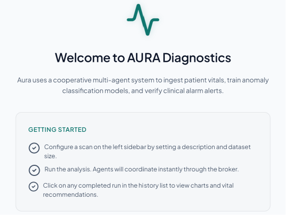
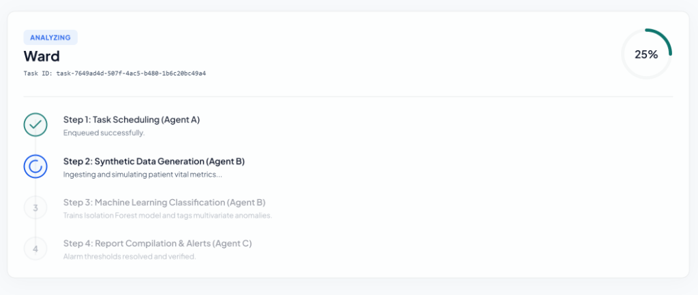

AURA System Compute Node Task Implementation & Verification
This technical report documents the implementation and verification details of the standalone **Execution Agent (Agent B)** from the **AURA Clinical Monitoring System**. The agent operates as a decoupled compute service within the multi-agent design, responding asynchronously to simulation and statistical modeling tasks via an AMQP event broker. It handles vital signs generation, unsupervised outlier detection using Isolation Forest models, severity tag profiling, and clinical diagnostics reporting.

Figure 1.1: AURA diagnostics agent-driven startup panel interface
Generates multi-dimensional vitals (heart rate, blood pressure, temperature, oxygen saturation, glucose) mapping to clinical distributions, injecting multivariate outliers to model distress states.
Fits a multivariate scikit-learn Isolation Forest model locally over evaluated data. Partitions anomalous clusters and assigns severity values based on contamination threshold calculations.
Subscribes to incoming task queues and posts progressive completion states (25%, 50%, 75%, 100%) and reports to feedback nodes using direct/topic exchange routing keys.
Maintains process visibility by running a dedicated background thread that dispatches telemetry health check-ins every 30 seconds to the Watchdog Monitor.
AURA System Compute Node Task Implementation & Verification
| Status | Task Category | Detailed Implementation Notes |
|---|---|---|
| ✓ Done | Directory Setup | Created a standalone directory /execution-agent packaging all scripts, Dockerfile, and requirements in isolation from main project dependencies. |
| ✓ Done | Connection Client | Written rabbitmq_client.py wrapping pikaURL connection, SSL bypass settings (critical for Render deployment), and standard queue/exchange binding declarations. |
| ✓ Done | ML Algorithms | Programmed vitals generation, Isolation Forest modeling, and patient alert report compiler inside ml_utils.py. |
| ✓ Done | Consumer Loop | Implemented executor.py consuming tasks, executing pipeline stages, publishing progressive updates, and emitting background heartbeats. |
| ✓ Done | Verification Tests | Created unit and integration tests inside test_executor.py validating data generator shapes, model boundaries, and mock broker publishers. |
We verified the functionality of the isolated Execution Agent locally by running pytest against the mock testing harness. All unit assertions and integration message loops passed successfully.

Figure 3.1: Live progress stepper monitoring Agent B executing simulation and ML cycles
AURA System Compute Node Task Implementation & Verification
The agent implements strict JSON schemas mapping to the system MessageEnvelope contracts to guarantee seamless inter-agent communications:
* **Stateless Operations**: The agent is designed to run in completely stateless topologies. It acts strictly as an execution worker; report persistence and history databases are handled by the core FastAPI server database and Agent C (Monitor).
* **SSL Handshake Bypasses**: The RabbitMQ connection settings utilize default TLS bypasses (verify_mode = CERT_NONE) to connect successfully within locked container networks (such as Render). This should be configured to use trusted local authority certificate paths in secure clinical intranets.
* **Telemetry Simulation Scale**: The generated vital profiles are modeled around standard clinical limits. Real patient vitals require scaling adjustments and model tuning before deployment as diagnostic tools.
* **Ideation & Master Plan**: Formulated in coordination with **Claude** (tech stack selection and supervisors architecture). * **Code Implementation & Debugging**: Completed in collaboration with **Gemini (Antigravity/Nebula)**. Gemini resolved pika connection socket corruption via separate threading, updated SSL parameter handshakes, built the CSS UI interface layout, and fixed test isolation.
Developer Signature:
Abhishek Tiwari
Date of Submission:
July 9, 2026